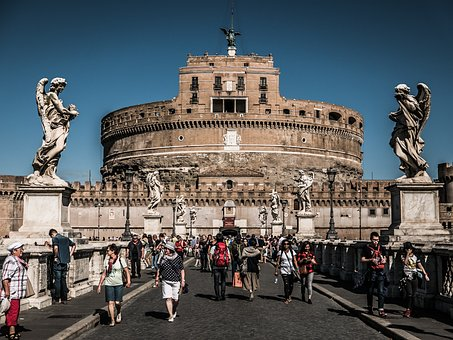
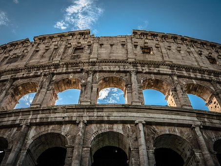
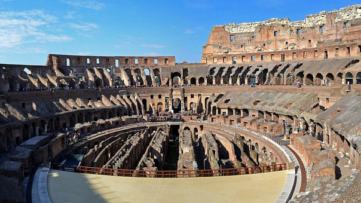
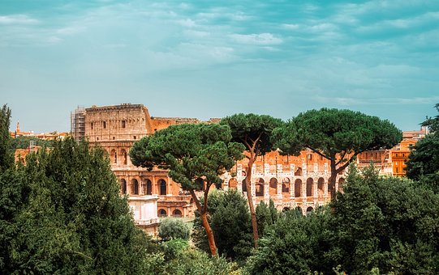
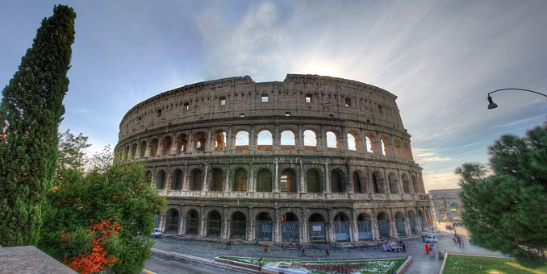
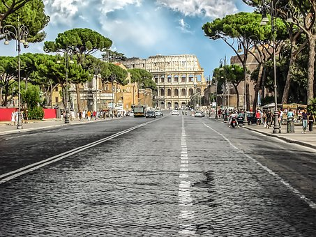

罗马斗兽场
The Colosseum
斗兽场的真实名称
z叫做"佛拉维欧圆形剧场"(Amphitheatrum Flavium)
由韦斯马列西亚诺皇帝始建于公元72年，而由他们的儿子提图皇帝完成于公元80年。
可以说没有一页罗马史不多少与斗兽场有关，它简直已演变成为罗马生活和罗马需的标记。
公元1084年，日尔曼人打进罗马城，古罗马城被洗劫一空，斗兽场也被人遗弃，一时曾成为人们挖掘大理石寻找建筑材料的来源。
构建这个庞然大物的封建帝王肯定不会想到，如今的斗兽场每天吸引着成千上万的游人，为后来人带来巨额收入，可谓有秀恰在不用时。
更多资料
the more
- 
- 
- 
- 
- 
- 
-
斗兽场呈椭圆形，长直径187公尺，短直径155公尺。
从外围看，整个建筑分为四层，底部三层为连拱式建筑，每个拱门两侧有石柱支撑。
第四层有壁住装饰，正对着四个半径处有四扇大拱门，是登上斗兽场内部看台回廊的入口。
兽场内部的看台，由低到高分为四组，观众的席位按等级尊卑地位之差别分区。
斗兽场由韦斯帕芗(Vespasian)皇帝下令修建，是古罗马当时为取悦凯旋的将领士兵和赞美伟大的古罗马帝国而建造的。
在其儿子提图斯在位期间建成，是古罗马帝国标志性的建筑物之一。
斗兽场建在另一个罗马皇帝尼禄的"金宫"(Domus Aurea)原址之上，这个宫殿在64年发生的罗马大火中被烧毁。
斗兽场是古罗马举行人兽表演的地方，参加的角斗士要与一只野兽搏斗直到一方死亡为止，也有人与人之间的搏斗。
根据罗马史学家狄奥·卡西乌斯(Dio Cassius)的记载，斗兽场建成时罗马人举行了为期100天的庆祝活动，宰杀了9000只牲畜。
斗兽场这种建筑形态起源于古希腊时期的剧场，当时的剧场都傍山而建，呈半圆形，观众席就在山坡上层层升起。